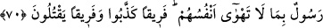

her hallerinde Allah’la berâberdirler. Şu halde mü’mine düşen, âdî vasıflardan ibaret
olan kalbinin hastalıklarını tedâvî etmek, nifaktan kurtulup muvaffak olanlara dâhil
olmaktır.
İbrâhim Havvâs (k.s) şöyle der: Kalbin devâsı şu beş şeydedir:
1- Kur’ân’ı düşünerek okumak,
2- Karnı boş bulundurmak,
3- Geceyi ihyâ etmek,
4- Seher vakti Allah’a yalvarıp yakarmak,
5- Sâlihlerle oturup kalkmak.
Şeyh Hüdâyî Hazretleri (k.s.)’de şöyle der: Biz hakikatte ıslah edenin Allah Teâlâ
olduğunu söyleriz. Fakat bu yolda en tesirli şey zikirdir. Zîrâ Allah Teâlâ
buyurmaktadır: “Bilesiniz ki, kalpler ancak Allah’ı anmakla huzur bulur.” (er-Ra’d,
13/28)
Hz. Ali (r.a.)’a şöyle buyurur: “İnsanlar üzerine öyle bir zaman gelecek ki İslâm’ın
sadece ismi, Kur’ân’ın sadece resmi kalacak. Mescidleri îmar edecekler. Halbuki o
mescidler Allah’ın zikri bakımından harap olacak. Bu zamanın en şerlileri âlimleri
olacak. Çünkü, fitnenin başı da sonu da onlardır.”
Sa’dî şöyle der:
Ne kadar ilim öğrensen de
Amel etmezsen eğer, cahilsin
Ne muhakkik olur, ne de bilgin
Sırtı kitap yüklü bir hayvan
O beyinsizde ne ilim var ne de hüner
Üzerinde ya odun var ya da defter
Bil ki, ilimlerin özü Allah’ı bilmektir. Bunun dışındakiler bu bilgiyi süsleyen,
güzelleştiren şeylerdir. Her ilim bizzat bir kemaldir. Ancak aslolan bilmek değil, amel
etmektir. Zîrâ, amel etmeden sırf okumak bir şey ifade etmez, bir fayda getirmez.
Muvaffakiyetin kendisine yoldaş olduğu kişiye ne mutlu...
70. Andolsun biz İsrâiloğulları’ndan söz aldık ve onlara peygamberler gönderdik.
Ne zaman bir peygamber onlara nefislerinin arzu etmediği birşey getirdiyse
onlardan bir kısmını yalanladılar, bir kısmını da öldürüyorlardı.
“Andolsun biz İsrâiloğulları’ndan” tevhîde inanacaklarına ve Tevrat’ta emredilen